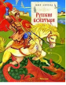

Богатырями в народе с незапамятных времен называли защитников родной земли. Об их подвигах слагали былины - удивительные песни-сказания, которые передавались из уст в уста, от поколения к поколению. Святогор-богатырь, Микула Селянинович, Илья Муромец, Добрыня Никитич, Алеша Попович - любимые народные герои. Но народ славил их не только за то, что они честно правили воинскую службу, оберегая русскую землю от врагов и нечистой силы, но и потому, что они горой стояли за справедливость. Пересказ для детей И.Карнауховой.